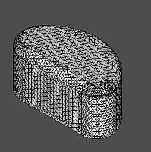
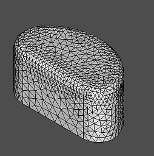
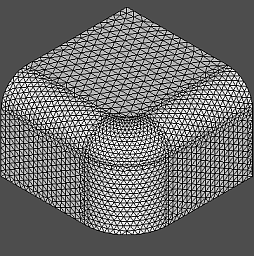
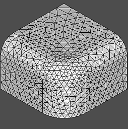
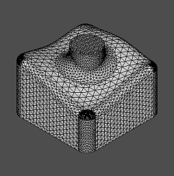
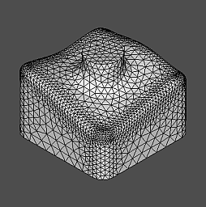

CAD Exchanger offers the following algorithms based on third-party meshers:
Mefisto is provided by the MeshAlgo_MefistoFactory class.
When building a mesh, Mefisto uses a maximum element length parameter M. M is computed for each edge from the user-defined parameters (see MeshAlgo_MefistoFactory::Parameters class) as a minimum of three values:
First, Mefisto splits each model edge honoring individual edge max sizes. Then it builds triangular tessellation for each model face using max size computed from the bounding box of the face. Mefisto works in 2D parameter space using approximate scaling along U and V directions to produce regular mesh in 3D. It is usually faster than Netgen but may produce triangles which sometimes are more skewed than those produced by Netgen.
Netgen is provided by the MeshAlgo_NetgenFactory class.
Netgen uses multiple parameters, including maximum and minimum element sizes, mesh granularity, number of optimization steps, etc. See MeshAlgo_NetgenFactory::Parameters for details.
Netgen primarily works in 3D. Depending on set parameters, it may produce elements with sizes adjusted to local curvatures - greater at flat surface patches and smaller at bending parts.
Once the mesh has been built for edges and faces, Netgen performs additional iterations (controlled by user-defined parameter MeshAlgo_NetgenFactory::Parameters::myOptSteps) to optimize the mesh. Setting this parameter to 0 disables optimization.
Netgen is generally slower than Mefisto and is more sensitive to quality of the input models. It is especially vulnerable (working very slowly) to elongate pin-like faces (or parts thereof).
For surface tessellation Netgen uses the advancing front method.
Refer to Netgen Mesher Example, Mefisto Mesher Example.
In addition to above mentioned issues of performance and sensitivity to input geometry, both Netgen and Mefisto can produce too fine-grain meshes. This will result in significant memory footprint (up to hundreds of MB's). In many cases, on complex models, this may result in exceeding virtual memory available for 32 bit applications. Thus, users may have to tailor default parameters for their most typical model configurations.
To mitigate adverse impact of limitations (primarily performance and memory footprint) users can be recommended to consider the following strategies:
The following images compare the same models triangulated with the two meshers:
| Mesh built Mefisto | Mesh built Netgen |

|

|

|

|

|

|
CAD Exchanger provides additional extensions when working with the Netgen-based algorithm provided by the MeshAlgo_NetgenFactory class. These include:
In addition to 2D surface elements, Netgen may also create 3D tetrahedron elements. To enable that, respective parameters must be set prior to invoking a computational mesher as follows:
After initial generation of volume elements, Netgen may invoke iterative optimization. The number of these iterations can be controlled by the MeshAlgo_NetgenFactory::Parameters::myVolumeOptSteps parameter.
Once the computational mesh has been created, the internal Netgen mesh can be retrieved and queried as follows:
To prepare the mesh for further usage in CAE applications, original B-Rep faces may be assigned with boundary conditions.
SDK API refers to a boundary condition via its integer id and allows to specify a string name for each boundary condition.
The following example demonstrates how to assign boundary conditions:
Boundary condition indices must be greater or equal to 1. Although CAD Exchanger SDK does not enforce the requirement that indices must be sequential, the internal Netgen algorithms may have such expectations and behave indefinitely otherwise. So ensuring that there are no gaps in the indices is strongly recommended.
CAD Exchanger SDK allows to export internal Netgen meshes to the following file formats:
CAD Exchanger relies on own Netgen implementation of export. All the writers inherit common base class (Mesh_NetgenBaseWriter) and follow consistent approach:
The OpenFOAM exporter additionally allows to customize the mechanism of writing boundary conditions. Refer to Mesh_NetgenOpenFOAMWriter for details.